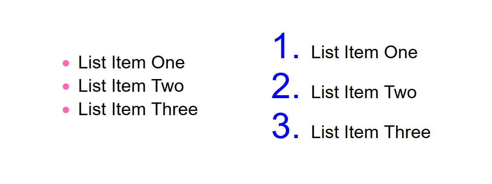

Yazılım Gündemi - 4
29 Temmuz - 4 Ağustos 2019
İçindekiler
< Önceki Gündem | 29 Temmuz - 4 Ağustos 2019 | Sonraki Gündem >
1 Go dili topluluğu, dile generic programlama özellikleri eklemeyi tartışıyor
C# yazdığım zamanlardan hatırladığım kadarıyla generic programlama terimi, tipi belli olmayan fonksiyon parametreleri tanımlamak için kullanılıyordu. Örnek vererek daha iyi anlatırım:
C++'da generic programlama ile şu şekilde bir yapı kurabiliyoruz.
template <typename T> class Liste { // sınıf içeriği }; class Hayvan { }; class Araba { }; int main() { auto hayvan_listesi = new Liste<Hayvan>(); auto araba_listesi = new Liste<Araba>(); }
Bu yapının avantajı hem bizi kod tekrarından kurtarıyor, hem de işimizi
kolaylaştırıyor. Bu yapı sayesinde, atıyorum bu listelerin içeriklerini
yazdırmak istersek, parametre olarak T alan bir fonksiyon kodladığımızda, o
fonksiyona bu listelerin ikisini de gönderebiliyoruz.
Go dili topluluğu da, bu özelliği Go diline Contracts ile eklemeyi konuşuyor. İlgili tavsiye sayfasında detaylıca anlatılmış.
2 Ruby on Rails 6.0.0 RC2 yayınlandı
Bu yılın başlarında 6.0.0 beta1 sürümü duyurulan popüler Ruby framework sistemi Ruby on Rails, bu hafta içerisinde 6.0.0 rc2 sürümünü duyurdu.
6.0.0 sürümü ile gelecek özelliklerden bazıları şunlar:
- Action Mailbox
- Action Text
- Çoklu veritabanı desteği
- Paralel test çalıştırma desteği
Diğer özellikler için bu sayfayı ziyaret edebilirsiniz.
3 Windows Terminal ön izleme sürümü v0.3 duyuruldu
Uzun bir süredir geliştiriciler tarafından pek tercih edilmeyen Windows, artık bazı şeyleri değiştirerek geliştiricileri kendine çekmeyi planlıyor gibi. Bunlardan biri de o eski hantal, kullanışsız ve özelleştirme desteği çok az olan terminal uygulaması. Bir süredir Microsoft'un bu uygulama üzerinde çalıştığını biliyoruz. Zaten duyurdukları ilk ön izleme sürümü de bu değil. Bu ön izleme sürümü ile gelen bazı yeni özellikler şu şekilde:
3.1 Taşınabilir başlık çubuğu
Bu özelliği anlamadım önceden pencere taşınamıyor muydu yani, yeni mi geldi? İlginç.

3.2 Sekmeler kısmındaki açılır menünün yeri değişmiş
Eski sürümde böyleyken:
Artık bu hale gelmiş:
Diğer özellikler için konu başlığındaki bağlantıya tıklayabilirsiniz. Açıkcası bir terminal sever olarak Windows'a yeni modern bir terminal arayüzü gelmesine sevindim fakat bu saatten sonra GNU/Linux tarafından tekrar Windows'a geri dönmem çok zor. Yine de Windows üzerinde çalışan arkadaşlar adına sevindim.
4 Firefox 68 ile gelen yeni CSS özellikleri
Firefox tarayıcısının bu ay başında duyurulan 68 numaralı sürümü ile bazı yeni CSS özellikleri de kullanıma açılmış. Bunlardan birisi şu şekilde:
4.1 ::marker ile listelerin maddelerini özelleştirme
Bildiğimiz gibi HTML'de iki çeşit liste tipi var. Birisi ul, yani Unordered
List (Sırasız Liste); diğeri ise ol, yani Ordered List (Sıralı Liste).
Artık bu çeşit listenin de madde işaretlerini CSS ile özelleştirebileceğiz.
Şöyle ki:
ul ::marker { color: hotpink; } ol ::marker { color: blue; font-size: 200%; }
Sonuç işe şu şekilde oluyor: 
Diğer CSS özellikleri için bu sayfayı ziyaret edebilirsiniz.
5 Bootstrap 3 desteği sonlandırıldı
Aslında bu geçen haftanın haberi fakat gözden kaçmış ama yine de değinmeden geçmek istemedim. Tasarım cahili bir back-end developer olarak çok işime yaramış, kendisiyle nice siteler hazırlamıştım fakat artık Bootstrap 3 sürümü emekliye ayrılıyor. Artık güvenlik güncelleştirmeleri de gelmeyecek.
Bootstrap ekibi yeni uzun dönem desteklerini (LTS) Bootstrap 4 sürümü ile devam ettireceklerini duyurdu.
Elveda Bootstrap 3…
6 Diğer Haberler
- Yazılım ile ilgili yeni bir Türkçe podcast serisi başladı: Pantalks.
- Çankırı Sağlık İl Müdürlüğü Bilgi Sistemleri, Windows Aktif Dizin Yapısıyla entegre çalışan AD Yönetim uygulamasının ilk sürümünü açık kaynak olarak yayınladı.
- Laravel Türkiye forumları yenilendi.
- Android Studio 3.5 RC2 sürümü duyuruldu.
- Gitea 1.9.0 sürümünü yayınladı.
- JavaScript ile platformlar-arası (cross-platform) masaüstü uygulamalar geliştirmeye yarayan Electron kütüphanesinin 6.0.0 sürümü duyuruldu.
- Crystal programlama dilinin 0.30.0 sürümü duyuruldu.
- Amazon, tüm veritabanı sistemleri için tek bir sorgu dili olma iddiasını taşıyan yeni aracını duyurdu: PartiQL, GitHub Deposu.
- MSDN Magazine yayın hayatına son verdi.
- Microsoft, proje örneklerinin listenebileceği yeni bir sayfa yayınladı: https://docs.microsoft.com/samples.
- ASP.NET takımı, RESTful HTTP hizmetleri ile etkileşime geçmeyi sağlayan yeni komut satırı aracını duyurdu: HttpRepl, GitHub Deposu.
- EmacsConf sanal konferansı için konuşmacı çağrısı yayınladı.
- GNU C (glibc) kütüphanesinin 2.30 sürümü yayınlandı.
- OpenJDK takımı, Loom projesinin erken erişim sürümlerini duyurdu.
- Sunucuyu test etmek için yük oluşturmak amacıyla kullanılan anevicon isimli aracın v7.0.0 sürümü duyurdu.
- Ruby kütüphanesi ROM (Ruby Object Mapper), 5.1 sürümü yayınlandı.
- Go ile yazılmış paralel görüntü işleme algoritmalarının toplandığı bild isimli proje v0.11.0 sürümünü yayınladı.
- Go ile yazılmış, shell komutları için görselleştirme imkanı sunan Sampler isimli proje, ilk stabil sürümünü duyurdu.
- Git depolarınızı takip eden ve duruma göre
pullveyapushyapan araç açık kaynak olarak yayınlandı: git-o-matic. - Tamamen merkezsizleştirilmiş (decentralized) anahtar-değer (key-value) depo aracı LF, 0.9.20.0 sürümünü duyurdu.
- Makine öğrenmesi modellerini JSON API olarak kullanmaya olanak sağlayan araç Cortex, v0.7.0 sürümü yayınlandı.
- Yapay sinir ağları temelli elastic search aracı GNES, v0.0.26 sürümünü yayınladı.
- Java ile PDF oluşturma ve düzenleme kütüphanesi OpenPDF 1.3.0 sürümünü duyurdu.
- Asity 3.0.0 sürümü duyuruldu.
- BlobCityDB veritabanının 1.7.9 sürümü duyuruldu.
- Sadece 512 byte ile BASIC dilini çalıştırabilen interpreter projesi bootBASIC yayınlandı.
- Yeni bir etiketleme dili ortaya çıktı: JEML
7 Lisans

Yazılım Gündemi - 4 yazısı Eren Hatırnaz tarafından Creative Commons Atıf-GayriTicari-AynıLisanslaPaylaş 4.0 Uluslararası Lisansı (CC BY-NC-SA 4.0) ile lisanslanmıştır.